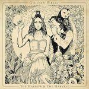
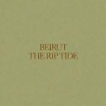
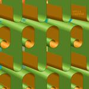

Music Reviews
-
Razika Program 91
Norwegian female quartet comfortably dabble in English 2 Tone with cross-rhythmic indie pop.
Juan Edgardo Rodríguez wants more cowbell... -
Mazes A Thousand Heys
A Thousand Heys may be catchy, but Mazes are treading a well-worn path with this one.
Joel Stanier wishes it was The Thermals... -

Gillian Welch The Harrow & the Harvest
Keenly anticipated, Gillian Welch delivers a new soulful, dark, lyrical album that touches on familiar themes – temptation, tragedy and loss.
A real treat for long time fans and newcomers alike....
-

O.A.R. King
Veteran jammers Of a Revolution issue their first new material in three years. Is King a shimmering diamond? Will it capture hearts, ignite the clubs, and attract followers in spades?
Benjamin Jones sees if King is aces -

Beirut The Rip Tide
Zach Condon no longer sounds like the drunk guy wailing in the streets of Paris with his brass band. He’s growing up. The Rip Tide showcases the more mature side of Beirut.
Randi Dietiker wishes she was still in Europe... -

Ultra//Negative Finally I'm At Peace
Please give these New Hampshire-based exponents of Power Violence eight and a half minutes of your time, or whatever you can spare.
Sam Redlark wonders if raw energy alone is enough to carry a band... -

Three Trapped Tigers Route One or Die
Three Trapped Tigers are apparently what happens when a classical pianist discovers Aphex Twin records and decides to form a band. It may sound like they'll be tasteful, worthy and perhaps even a little bit dull. But they really aren't.
Mark Davison apologises for the delay... -

Hella Tripper
Zach Hill and Spencer Seim take Hella back to its two-man assemblage for their fifth full-length, Tripper.
Sean Caldwell reviews... -

The War on Drugs Slave Ambient
Backwards-looking Philadelphia troupe's Slave Ambient searches for clarity amidst the ambiguity of an overcast haze.
Juan Edgardo Rodríguez will see you on the other side... -

Shabazz Palaces Black Up
Enigmatic hip-hop outfit Shabazz Palaces deconstruct the genre on this ghostly, disorienting debut album, the first ever rap release on Sub Pop.
Stephen Wragg reviews...